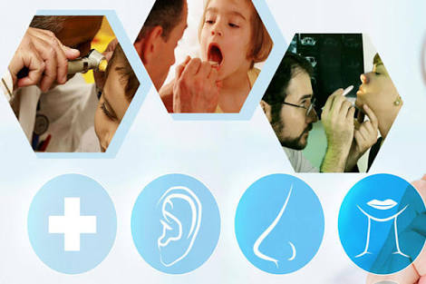

| |
HOME SERVICE EMERGENCY DOCTORS APPOINTMENT ABOUT US CONTACT US |
| |
HOME SERVICE EMERGENCY DOCTORS APPOINTMENT ABOUT US CONTACT US |
|
ENT (Ear, Nose, and Throat) Our ENT department comprises of experienced and highly skilled ENT specialists who are experts in treating and conducting surgeries of the Ear, Nose and Throat. The skilled and dedicated specialists of the ENT department at Uni Hospital work in collaboration with neurosurgeons, pulmonologists (chest physicians), oncosurgeons, and cosmetic and reconstructive surgeons to provide comprehensive care to patients. They are updated with the latest techniques and advances in the various subspecialties of ENT. |
 |